اهلان بيك في قسم بلايستيشن
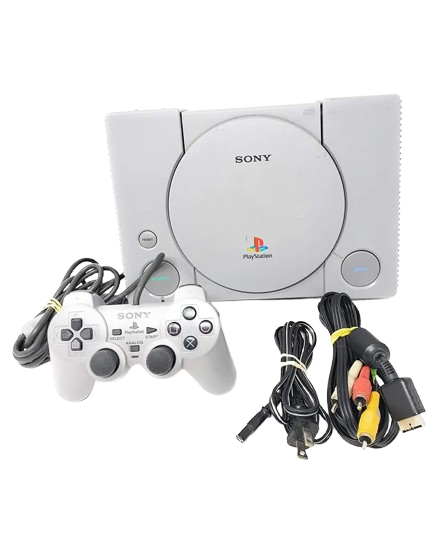
- PS1: PlayStation 1 (اسم الجهاز).
- CPU: معالج رئيسي (R3000A).
- RAM: ذاكرة الوصول العشوائي (2 ميجابايت).
- CD-ROM: نوع الأقراص (سرعة 2x).
- Memory Card: بطاقة حفظ (128 كيلوبايت).
- Polygons: قدرة الرسوميات (360K/ثانية).
- Resolution: دقة الشاشة (مثل 640x480).
- AV Multi-Out: منفذ الصورة والصوت.
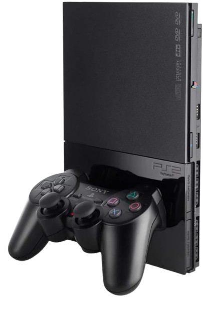
- PS2: PlayStation 2 (اسم الجهاز).
- CPU: معالج "Emotion Engine" (128-bit).
- GPU: معالج رسوميات "Graphics Synthesizer".
- RAM: 32 ميجابايت (ذاكرة رئيسية).
- DVD-ROM: مشغل أقراص DVD (وسائط الألعاب).
- Memory Card: بطاقة حفظ (8 ميجابايت).
- Polygons: 75 مليون مضلع/ثانية (أداء رسومي).
- Resolution: دقة تصل إلى 1080i (في بعض الألعاب).
- Ports: منفذ USB + منفذ Network Adapter (اختياري).
- Backward Compatibility: تشغيل ألعاب PS1 (متوافق معها).
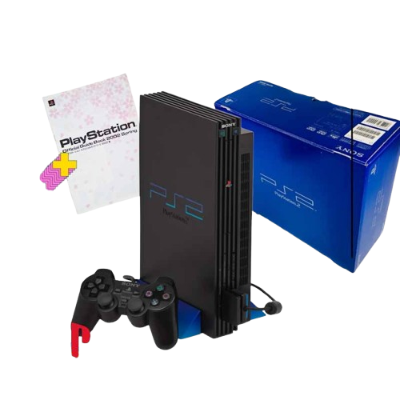
- الإصدار: PS2 Fat (الإصدار السميك الأول).
- الكود: SCPH-10000 / SCPH-30000 (حسب المنطقة).
- CPU: معالج Emotion Engine (294.9 ميجاهرتز).
- GPU: معالج Graphics Synthesizer (147.5 ميجاهرتز).
- RAM: 32 ميجابايت.
- مشغل الأقراص: DVD-ROM (يدعم ألعاب DVD/CD).
- بطاقة الذاكرة: منفذان لبطاقات 8 ميجابايت.
- منافذ التحكم: 4 منافذ للأجهزة.
- التوافق: يدعم ألعاب PS1.
- الدقة: تصل إلى 1080i (في ألعاب محددة).
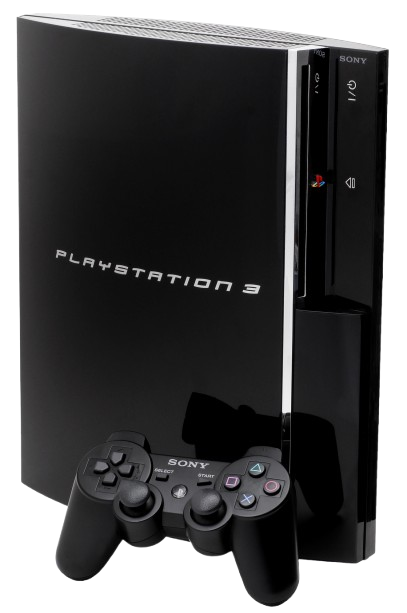
- الإصدار: PS3 Fat (الإصدار الأول السميك)
- المعالج: Cell Broadband Engine (3.2 GHz)
- الرسوميات: NVIDIA RSX
- الذاكرة: 256MB XDR + 256MB GDDR3
- التخزين: HDD 20/60/80 GB (قابل للترقية)
- مشغل الأقراص: Blu-ray (يدعم أقراص PS3، PS1، بعضها PS2)
- المنافذ: 4 × USB، HDMI، Wi-Fi، Bluetooth
- التوافق: يدعم ألعاب PS1 (جميع الموديلات) وPS2 (الموديلات الأولى فقط)
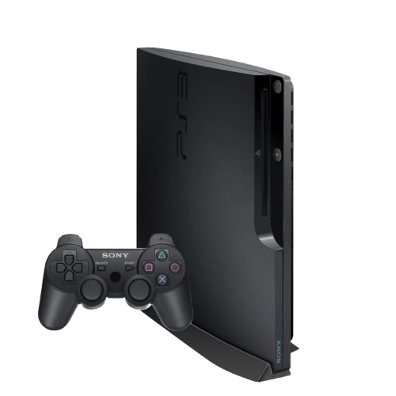
الكود: CECH-2000 (الموديل الأول من السليم)
- المعالج: Cell Broadband Engine (45nm، استهلاك أقل للطاقة)
- الرسوميات: NVIDIA RSX (تقنية 40nm)
- الذاكرة: 256MB XDR + 256MB GDDR3 (مشابه للإصدار السميك)
- التخزين: HDD 120/160/250/320 GB (ثابت داخلي)
- مشغل الأقراص: Blu-ray (يدعم أقراص PS3 وPS1)
- المنافذ: 2 × USB، HDMI، Wi-Fi، Bluetooth
- التوافق: يدعم ألعاب PS1 (لا يدعم ألعاب PS2)
- الطاقة: استهلاك أقل للطاقة وحجم أصغر بنسبة 32%
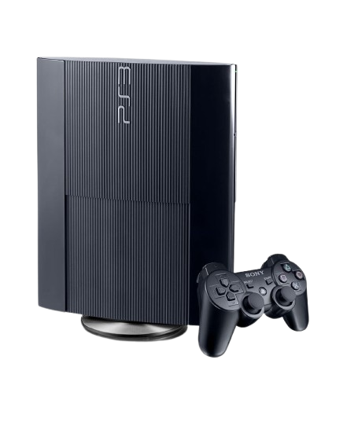
- الإصدار: PS3 Super Slim (آخر إصدار)
- التصميم: غطاء منزلق manual
- المعالج: Cell (45nm)
- الرسوميات: NVIDIA RSX (28nm)
- الذاكرة: 512MB مجتمعة (256 XDR + 256 GDDR3)
- التخزين: HDD 250/500GB
- المنافذ: 2×USB، HDMI
- التوافق: يدعم ألعاب PS1 فقط
- الميزة: الأصغر حجمًا والأقل استهلاكًا للطاقة
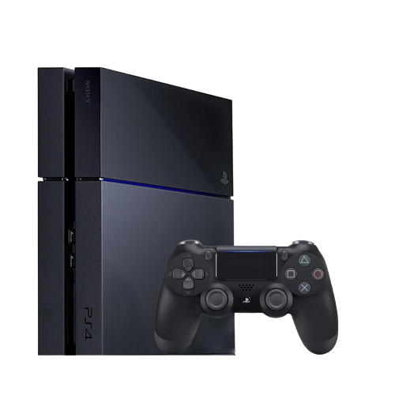
- الإصدار: PlayStation 4 (الإصدار الأصلي)
- الإطلاق: 2013
- المعالج: AMD Jaguar 8-core (1.6 GHz)
- الرسوميات: AMD Radeon (1.84 TFLOPs)
- الذاكرة: 8GB GDDR5
- التخزين: HDD 500GB/1TB (قابل للترقية)
- مشغل الأقراص: Blu-ray / DVD
- المنافذ: 2×USB 3.0، HDMI، Optical Audio
- الشبكة: Wi-Fi 802.11n، Ethernet
- الميزات: منفذ PlayStation Camera (اختياري)
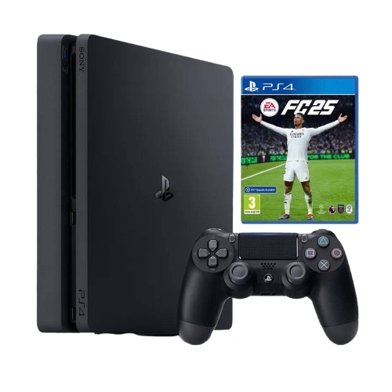
- الإصدار: PlayStation 4 Slim
- الإطلاق: 2016
- الحجم: أصغر وأخف من الإصدار الأصلي
- المعالج: AMD Jaguar 8-core (1.6 GHz)
- الرسوميات: AMD Radeon (1.84 TFLOPs)
- الذاكرة: 8GB GDDR5
- التخزين: HDD 500GB/1TB (قابل للترقية)
- مشغل الأقراص: Blu-ray / DVD
- المنافذ: 2×USB 3.0، HDMI
- الشبكة: Wi-Fi 802.11ac، Ethernet
- الطاقة: استهلاك أقل للطاقة
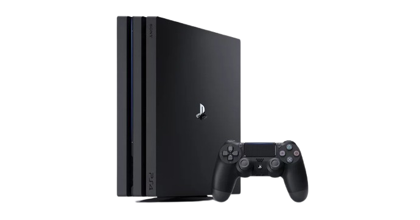
- الإصدار: PlayStation 4 Pro
- الإطلاق: 2016 (نفس عام Slim)
- المعالج: AMD Jaguar 8-core (2.1 GHz)
- الرسوميات: AMD Polaris (4.2 TFLOPs)
- الذاكرة: 8GB GDDR5 + 1GB اضافي
- التخزين: HDD 1TB (قابل للترقية)
- مشغل الأقراص: Blu-ray 4K / DVD
- الدقة: يدعم 4K UHD وHDR
- المنافذ: 3×USB 3.0، HDMI 2.0
- الشبكة: Wi-Fi 802.11ac، Ethernet
- الميزة: Boost Mode للأداء المحسن
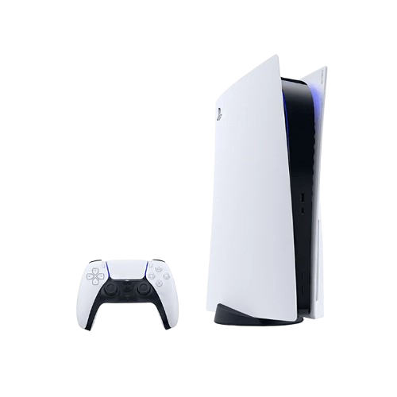
- الإصدار: PlayStation 5 (الإصدار الأصلي)
- الإطلاق: 2020
- المعالج: AMD Zen 2 (8-core / 3.5 GHz)
- الرسوميات: AMD RDNA 2 (10.3 TFLOPs)
- الذاكرة: 16GB GDDR6
- التخزين: SSD 825GB (قابل للترقية)
- مشغل الأقراص: 4K UHD Blu-ray (إصدار القرص) / بدون مشغل (إصدار Digital)
- الدقة: 4K @ 120Hz / 8K محتمل
- المنافذ: 2×USB Type-C، 3×USB Type-A، HDMI 2.1
- الميزات: DualSense Controller، Ray Tracing، 3D Audio
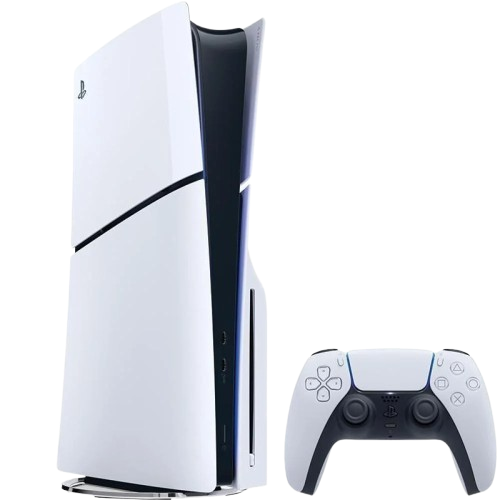
- الإصدار: PlayStation 5 Slim (أو الإصدار المحدث)
- الإطلاق: 2023
- الحجم: أصغر بنسبة 30% من الإصدار الأصلي
- المعالج: AMD Zen 2 (8-core / 3.5 GHz) (مطوّر في تقنية 6nm)
- الرسوميات: AMD RDNA 2 (10.3 TFLOPs)
- الذاكرة: 16GB GDDR6
- التخزين: SSD 1TB (قابل للترقية)
- مشغل الأقراص: 4K UHD Blu-ray (قابل الفصل في الإصدار القرص)
- المنافذ: 2×USB Type-C (أمامي وخلفي)، 2×USB Type-A، HDMI 2.1
- الطاقة: استهلاك أقل للطاقة وحرارة أقل
- السعر: أعلى قليلاً من الإصدار الأصلي
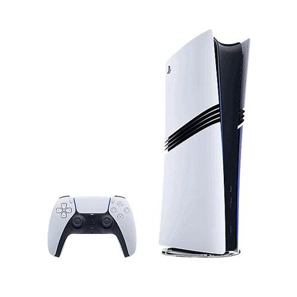
- الإصدار: PlayStation 5 Slim (أحدث إصدار حالي)
- الإطلاق: نوفمبر 2023
- الحجم: أصغر بنسبة 30% من الإصدار الأصلي
- التخزين: SSD 1TB (زيادة 175GB عن الإصدار الأول)
- مشغل الأقراص: قابل للفصل (يُباع منفصلًا بـ 80 دولار)
- المنافذ: منفذان USB-C أماميان (بدلًا من واحد)
- الطاقة: استهلاك أقل للطاقة بنسبة 20%
- السعر: 500 دولار (نسخة القرص) / 450 دولار (نسخة Digital)